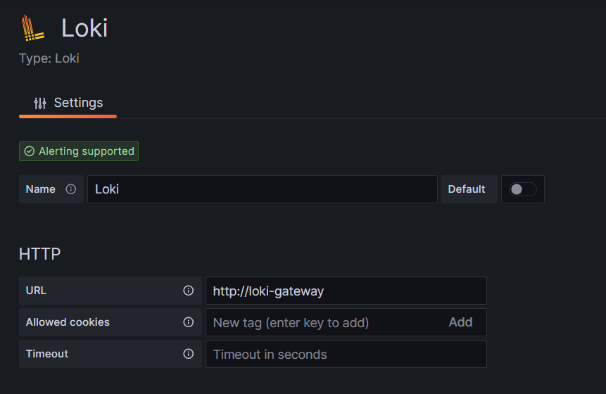
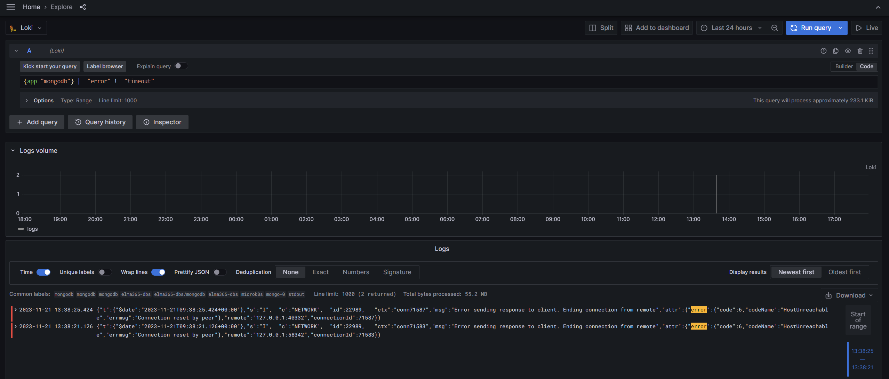

Loki is an open platform for collecting, indexing, and storing logs. It enables debugging and problem detection in the system based on log data analysis and monitoring.
Before installing Loki, configure the monitoring tools.
This article describes how to:
- Install the Loki service using a chart. This is a universal option that can be applied to any Kubernetes platform in use.
- Configure the Loki module built into the Deckhouse Kubernetes Platform.
The installation of Loki consists of five steps:
- Download the Helm chart and the configuration file.
- Create buckets in MinIO.
- Fill in the configuration file.
- Install the Loki chart using Helm in the Kubernetes cluster.
- Configure the connection to Loki in Grafana data sources.
Начало внимание
When installing Loki + Tempo, start with the Loki addon. This allows preserving cross-linking settings, as they are initially configured in the Datasource settings.
Конец внимание
Step 1: Download the Helm chart and the configuration file
To install over the internet, obtain the configuration file values-loki.yaml by executing the command:
helm repo add elma365 https://charts.elma365.tech
helm repo update
helm show values elma365/loki > values-loki.yaml
Getting configuration file for installation in a closed environment without internet access,
helm repo add elma365 https://charts.elma365.tech
tar -xf loki-X.Y.Z.tgz |
Step 2: Create buckets in MinIO
1. Create alias for MinIO:
mc alias set my_alias http://minio.local accessKey secretKey
2. Create buckets with the names admins, chunks and rules:
mc mb -p my_alias/admin --region=ru-central-1
mc mb -p my_alias/chunks --region=ru-central-1
mc mb -p my_alias/rules --region=ru-central-1
Step 3: Fill in the configuration file
Fill in the values-loki.yaml configuration file to install Loki
loki: |
loki: |
Step 4: Install the Loki chart using Helm in the Kubernetes cluster
Execute the installation of the Loki chart in namespace monitoring.
For online installation via the internet:
helm upgrade --install -n monitoring loki elma365/loki -f values-loki.yaml
For offline installation without internet access, navigate to the directory with the downloaded chart and execute the command:
helm upgrade --install loki ./loki -f values-loki.yaml -n monitoring
Step 5: Configure the connection to Loki in Grafana data sources
The Loki data source is automatically added to Grafana during installation. You can check it in in the administrator’s menu: Home > Administration > Data source or Home > Connections > Data sources.
To add the source manually, in the URL field, specify http://loki-gateway

Example of viewing logs for mongodb ({app="mongodb"} |= "error" != "timeout"):

Configure Loki in the Deckhouse platform
If you use the Deckhouse platform, there are two ways to install Loki:
- Install the Loki chart into the Kubernetes cluster following the description above.
- Enable the Loki module built into Deckhouse. When using this module, you can view the logs from all pods of the cluster in Grafana.
To enable the Loki module in the Deckhouse platform, use the following code:
kubectl apply -f - <<EOF
# Configure log collection from all pods
apiVersion: deckhouse.io/v1alpha1
kind: ClusterLoggingConfig
metadata:
name: all-logs
spec:
type: KubernetesPods
destinationRefs:
- d8-loki
---
# Enable the Loki module and configure data storage settings
apiVersion: deckhouse.io/v1alpha1
kind: ModuleConfig
metadata:
name: loki
spec:
settings:
storageClass: localpath-deckhouse-system
diskSizeGigabytes: 30
retentionPeriodHours: 168
enabled: true
version: 1
---
# Enable the log-shipper module
apiVersion: deckhouse.io/v1alpha1
kind: ModuleConfig
metadata:
name: log-shipper
spec:
version: 1
enabled: true
EOF